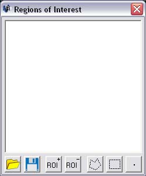

Open the "Windows" menu in the Overview window and select "ROIs". This should open the window and put a check next to the menu item to show that the window is open.
If this is the first time the window has been opened, it will be placed in its default position below the overview window. If the window has been opened before, it will be opened in the last place it was when it was closed.
To create a Region of Interest, first make sure that the Regions of Interest window is open. The procedure to do this is shown above.
Inside the Regions of Interest window, click on the "ROI+" button that is at the bottom of the window. This should add a new Region of Interest to the list above. The newly created Region of Interest will have a default name, such as "ROI-1".
To remove a Region of Interest, first make sure that the Regions of Interest window is open (the procedure to do this is shown above).
Select the Region of Interest to be removed by clicking on it once, this should hightlight it.
Now click on the "ROI-" button that is at the bottom of the window. This will remove the highlighted Region of Interest from the list and select the next one. Unless it was the last one in the list, then the previous one will be highlighted. This allows multiple consecutive Regions of Interest to be removed quickly.
To create an entity, the Regions of Interest window must be open. The procedure to do this is shown above. New entities may either be added to a previous Region of Interest, or can be created inside a new Region of Interest.
Entities can be created in 3 types - points, rectangles and polygons. The buttons to select each of these types are in the bottom left hand corner of the Regions of Interest window
Point entities cover a single pixel in the image. Points are added by left clicking on a point inside the image window. Once a point has been added, it cannot be edited or removed. To prevent adding a point after the create point entity button has been clicked, right click the mouse anywhere in the image window.
Rectangular entities create a box around an area by using 2 clicks to define them. The first click defines the one corner of the rectangle (such as the top left point) and the second click defines the opposite corner. If the first point was put in the wrong position, then the mouse can be right clicked anywhere in the image window to stop creating the entity. Once the second click has been made, the rectangle will change to the colour of the Region of Interest and will no longer be editable.
Polygonal entities are shapes that are made up of 3 or more points. While it is being created, new points can be added to a polygon by left clicking a point in the image window. If a point is added by mistake, it can be removed by right clicking anywhere inside the image window. To add the last point that will close the polygon, the mouse must be double clicked on the point instead of single clicked. Once this is done the polygon will change to the colour of the Region of Interest and will no longer be editable.
To add to a previous Region of Interest, the Region of Interest must first be selected. To select a Region of Interest, click on it once and it will become highlighted.
Now a type of entity must be chosen from the buttons on the bottom right of the Regions of Interest window. Once a button is clicked, the entity will be created and added to the selected Region of Interest. Once it has been defined, the entity will change colour to the colour of the Region of Interest.
To create an entity in a new Region of Interest, first make sure that no Region of Interest is selected. To do this, click somewhere inside the list area of the Region of Interest window where there are no Region of Interest items. If a Region of Interest was selected (and highlighted), it should no longer be highlighted after this.
Now a type of entity must be chosen from the buttons on the bottom right of the Regions of Interest window. Once a button is clicked, a new Region of Interest will be created with a default name and colour and the entity that is defined will be added to this one.
The colour boxes next to each Region of Interest in the list show the colour of that Region of Interest. To change this colour, click on the box and a colour picker window should appear. Colours can be created and selected in the standard way. Once a colour has been chosen and the "OK" button is clicked, the Region of Interest will update to match the new colour. The colour in the box will also reflect the change.
To rename a Region of Interest, make sure that the Region of Interest is highlighted in the list. This is done by left clicked the desired item once. It should now be highlighted.
Next, left click the highlighted Region of Interest a second time. This time the text should become editable.
Type in the new name and press enter
If the name already exists or is not valid, the name will change back to the original.
If the name is accepted, the text change to the new name and the editing will stop
Regions of Interest are made visible in the image and feature space windows by default as soon as they are created. But later this can be changed to show only the Regions of Interest that you are currently interested in.
The checkbox to the left of each Region of Interest item in the window shows its visibility. If it is checked it will be visible, if it is blank it will be invisible
To change its status, click the checkbox and it will switch states